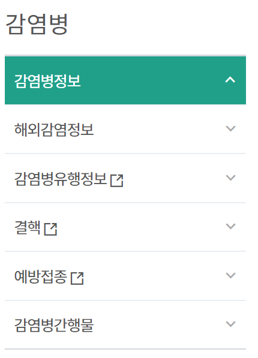
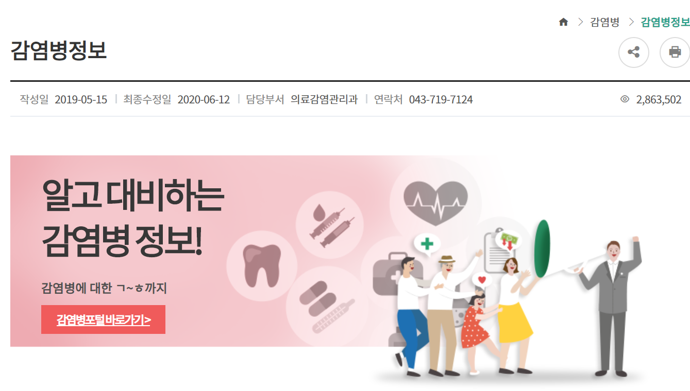

◎감염병포털 소개
법정감염병(전수/표본)의 현황(통계) 및 올바른 정보를 국민들이 쉽게 접근할 수 있는감염병 정보 포털사이트
◎통계
*전수감시 감염병:전수감시 감염병에 대한 주요통계, 질병별 통계, 지역별 통계, 성별/연령별 통계에 대한 통계
*비브리오 감시: 해수에서 측정한 비브리오 통계
*법정감염병의 증상, 진단 및 치료, 신고기준, 예방과 같은 정보
*감염병 관리, 각 기관에서 해야하는 수행체계, 감시체계, 실험실 검사, 역학조사, 환자관리/접촉자 관리, 방역관리에 대한 정보
◎발간자료
*감시연보: 감염병 신고·보고된 법정감염병 현황을 분석 정리한 자료
*역학조사연보: 시·군·구 역학조사반의 신고 접수된 수인성·식품매개 감염병 집단발생에 분석 정리한 자료
*주간소식지: 표본감시 감염병 주간 정보